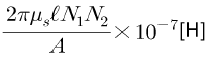
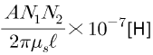
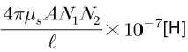
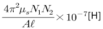
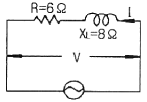
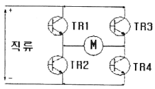
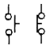

전기기능사 (2013-01-27 기출문제)
1과목: 전기 이론
1. 100V의 교류 전원에 선풍기를 접속하고 입력과 전류를 측정하였더니 500[W], 7[A]였다. 이 선풍기의 역률은?
- 0.61
- 0.71
- 0.81
- 0.91
(정답률: 71%)

2. 정전용량이 같은 콘덴서 10개가 있다. 이것을 병렬 접속할 때의 값은 직렬 접속할 때의 값보다 어떻게 되는 가?
- 1/10로 감소한다.
- 1/100로 감소한다.
- 10배로 증가한다.
- 100배로 증가한다.
(정답률: 68%)
3. 환상철심의 평균자로길이 ℓ[m], 단면적 A[m2], 비투자율 μs, 권선수 N1, N2인 두 코일의 상호 인덕턴스는?




(정답률: 67%)
4. 다음이 설명하는 것은?(금속 A와 B로 만든 열전쌍과 접점 사이에 임의의 금속 C를 연결해도 C의 양 끝의 접점의 온도를 똑같이 유지 하면 회로의 열기전력은 변화하지 않는다.)(오류 신고가 접수된 문제입니다. 반드시 정답과 해설을 확인하시기 바랍니다.)
- 제벡의 효과
- 톰슨 효과
- 제3금속의 법칙
- 펠티에 효과
(정답률: 71%)
5. 전류에 의해 발생되는 자기장에서 자력선의 방향을 간단하게 알아내는 법칙은?
- 오른나사의 법칙
- 플레밍의 왼손법칙
- 주회적분의 법칙
- 줄의 법칙
(정답률: 78%)
6. 키르히호프의 법칙을 이용하여 방정식을 세우는 방법으로 잘못된 것은?
- 키르히호프의 제1법칙을 회로망의 임의의 한 점에 적용한다.
- 각 폐회로에서 키르히호프의 제2법칙을 적용한다.
- 각 회로의 전류를 문자로 나타내고 방향을 가정한다.
- 계산결과 전류가 +로 표시된 것은 처음에 정한 방향과 반대방향임을 나타낸다.
(정답률: 69%)
7. 1차 전지로 가장 많이 사용되는 것은?
- 니켈-카드뮴 전지
- 연료 전지
- 망간 전지
- 납축 전지
(정답률: 82%)
8. 그림의 회로에서 전압 100[V]의 교류전압을 가했을 때 전력은?

- 10[W]
- 60[W]
- 100[W]
- 600[W]
(정답률: 42%)
9. 절연체 중에서 플라스틱, 고무, 종이, 운모 등과 같이 전기적으로 분극 현상이 일어나는 물체를 특히 무엇이라 하는가?
- 도체
- 유전체
- 도전체
- 반도체
(정답률: 66%)
10. Y-Y결선 회로에서 선간 전압이 200V 일 때 상전압은 약 몇 [V]인가?
- 100[V]
- 115[V]
- 120[V]
- 135[V]
(정답률: 69%)
11. 저항과 코일이 직접 연결된 회로에서 직류 220[V]를 인가하면 20[A]의 전류가 흐르고, 교류 220[V]를 인가하면 10[A]의 전류가 흐른다. 이 코일의 리액턴스[Ω]는?
- 약 19.⑤[Ω]
- 약 16.06[Ω]
- 약 13.06[Ω]
- 약 11.04[Ω]
(정답률: 43%)
12. 100[V], 300[W]의 전열선의 저항값은?
- 약 0.33[Ω]
- 약 3.33[Ω]
- 약 33.3[Ω]
- 약 333[Ω]
(정답률: 64%)
13. RLC 직렬회로에서 전압과 전류가 동상이 되기 위한 조건은?
- L = C
- ωLC = 1
- ω2LC = 1
- (ωLC)2 = 1
(정답률: 59%)
14. 자석에 대한 성질을 설명한 것으로 옳지 못한 것은?
- 자극은 자석의 양 끝에서 가장 강하다.
- 자극이 가지는 자기량은 항상 N극이 강하다.
- 자석에는 언제나 두 종류의 극성이 있다.
- 같은 극성의 자석은 서로 반발하고, 다른 극성은 서로 흡인한다.
(정답률: 80%)
15. 다음 중 자장의 세기에 대한 설명으로 잘못된 것은?
- 자속밀도에 투자율을 곱한 것과 같다.
- 단위자극에 작용하는 힘과 같다.
- 단위 길이당 기자력과 같다
- 수직 단면의 자력선 밀도와 같다.
(정답률: 51%)
16. 14[C]의 전기량이 이동해서 560[J]의 일을 했을 때 기전력은 얼마인가?
- 40[V]
- 140[V]
- 200[V]
- 240[V]
(정답률: 78%)
17. 1개의 전자 질량은 약 몇 [kg]인가?
- 1.679 × 10-31
- 9.109 × 10-31
- 1.679 × 10-27
- 9.109 × 10-27
(정답률: 56%)
18. 평등자장 내에 있는 도선에 전류가 흐를 때 자장의 방향과 어떤 각도로 되어 있으면 작용하는 힘이 최대가 되는가?
- 30°
- 45°
- 60°
- 90°
(정답률: 71%)
19. 반도체로 만든 PN 접합은 무슨 작용을 하는가?
- 정류 작용
- 발진 작용
- 증폭 작용
- 변조 작용
(정답률: 84%)
20. V = 200[V], C1=10[㎌], C2= 5[㎌]인 2개의 콘덴서가 병렬로 접속되어 있다. 콘덴서 C1에 축적되는 전하 [μC]는?
- 100[μC]
- 200[μC]
- 1000[μC]
- 2000[μC]
(정답률: 52%)
2과목: 전기 기기
21. ON, OFF를 고속도로 변환할 수 있는 스위치이고 직류 변압기 등에 사용되는 회로는 무엇인가?
- 초퍼 회로
- 인버터 회로
- 컨버터 회로
- 정류기 회로
(정답률: 66%)
22. 직류 발전기의 전기자 반작용에 의하여 나타나는 현상은?
- 코일이 자극의 중심축에 있을 때도 브러시 사이에 전압을 유기시켜 불꽃을 발생한다.
- 주자속 분포를 찌그러뜨려 중성축을 고정시킨다.
- 주자속을 감속시켜 유도 전압을 증가 시킨다.
- 직류 전압이 증가한다.
(정답률: 61%)
23. 그림은 교류전동기 속도제어 회로이다. 전동기 M의 종류로 알맞은 것은?

- 단상 유도전동기
- 2상 유도전동기
- 3상 동기전동기
- 4상 스텝전동기
(정답률: 54%)
24. 동기기에서 전기자 전류가 기전력보다 90° 만큼 위상이 앞설 때의 전기자 반작용은?
- 교차 자화 작용
- 감자 작용
- 편차 작용
- 증자 작용
(정답률: 61%)
25. 변압기 기름의 구비조건이 아닌 것은?
- 절연내력이 클 것
- 인화점과 응고점이 높을 것
- 냉각 효과가 클 것
- 산화현상이 없을 것
(정답률: 79%)
26. 직류를 교류로 변환하는 장치는?
- 정류기
- 충전기
- 순변환 장치
- 역변환 장치
(정답률: 85%)
27. 병렬 운전 중인 동기 발전기의 난조를 방지하기 위하여 자극 면에 유도 전동기의 농형권선과 같은 권선을 설치 하는데 이 권선의 명칭은?
- 계자 권선
- 제동 권선
- 전기자 권선
- 보상 권선
(정답률: 64%)
28. 동기속도 30[rps]인 교류 발전기 기전력의 주파수가 60[Hz]가 되려면 극수는?
- 2
- 4
- 6
- 8
(정답률: 45%)
29. 직류기에서 전압 변동률이 (-) 값으로 표시되는 발전기는?
- 분권 발전기
- 과복권 발전기
- 타여자 발전기
- 평복권 발전기
(정답률: 50%)
30. 권선 저항과 온도와의 관계는?
- 온도와는 무관하다.
- 온도가 상승함에 따라 권선 저항은 감소한다.
- 온도가 상승함에 따라 권선 저항은 증가한다.
- 온도가 상승함에 따라 권선의 저항은 증가와 감소를 반복한다.
(정답률: 68%)
31. 전기 기기의 철심 재료로 규소 강판을 많이 사용하는 이유로 가장 적당한 것은?
- 와류손을 줄이기 위해
- 맴돌이 전류를 없애기 위해
- 히스테리시스손을 줄이기 위해
- 구리손을 줄이기 위해
(정답률: 76%)
32. 3상 유도전동기의 1차 입력 60[kW], 1차 손실 1[kW], 슬립 3[%]일 때 기계적 출력 [kW]은?
- 62
- 60
- 59
- 57
(정답률: 66%)
33. 2차 전압 200[V], 2차 권선저항 0.03[Ω], 2차 리액턴스 0.04[Ω]인 유도전동기의 3[%]의 슬립으로 운전중이라면 2차 전류[A]는?
- 20
- 100
- 200
- 254
(정답률: 34%)
34. 복권 발전기의 병렬 운전을 안전하게 하기 위해서 두 발전기의 전기자와 직권 권선의 접촉점에 연결하여야 하는 것은?
- 집전환
- 균압선
- 안정저항
- 브러시
(정답률: 67%)
35. 부흐홀츠 계전기로 보호되는 기기는?
- 발전기
- 변압기
- 전동기
- 회전 변류기
(정답률: 74%)
36. 직류 전동기의 전기적 제동법이 아닌 것은?
- 발전 제동
- 회생 제동
- 역전 제동
- 저항 제동
(정답률: 65%)
37. 출력 10[kW], 슬립 4[%]로 운전되고 있는 3상 유도전동기의 2차 동손은 약 몇 [W]인가?
- 250
- 315
- 417
- 620
(정답률: 42%)
38. 동기 발전기의 병렬 운전 중 기전력의 위상차가 생기면 어떤 현상이 나타나는가?(문제 오류로 실제 시험에서는 2, 3 번이 정답 처리 되었습니다. 여기서는 2번을 정답처리 합니다.)
- 무효 순환전류가 흐른다.
- 동기화 전류가 흐른다.
- 유효 순환전류가 흐른다.
- 단락사고가 발생한다.
(정답률: 78%)
39. 단상 유도전동기 기동장치에 의한 분류가 아닌 것은?
- 분상 기동형
- 콘덴서 기동형
- 세이딩 기동형
- 회전 계자형
(정답률: 71%)
40. 직류 발전기 전기자의 주된 역할은?
- 기전력을 유도한다.
- 자속을 만든다.
- 정류작용을 한다.
- 회전자와 외부회로를 접속한다.
(정답률: 55%)
3과목: 전기 설비
41. 저압 연접인입선의 시설 방법으로 틀린 것은?
- 인입선에서 분기되는 점에서 150[m]를 넘지 않도록 할것
- 일반적으로 인입선 접속점에서 인입구장치까지의 배선은 중도에 접속점을 두지 않도록 할 것
- 폭 5[m]를 넘는 도로를 횡단하지 않도록 할 것
- 옥내를 통과하지 않도록 할 것
(정답률: 65%)
42. 애자사용공사에 대한 설명 중 틀린 것은?
- 사용전압이 400[V] 미만이면 전선과 조영재의 간격은 2.5[㎝] 이상일 것
- 사용전압이 400[V] 미만이면 전선 상호간에 간격은 6[㎝] 이상일 것
- 사용전압이 220[V] 이면 전선과 조영재의 이격거리는 2.5[㎝] 이상일 것
- 전선을 조영재의 옆면을 따라 붙일 경우 전선 지지점간의 거리는 3[m] 이하일 것
(정답률: 56%)
43. 절연 전선을 서로 접속할 때 사용하는 방법이 아닌 것은?
- 커플링에 의한 접속
- 와이어 커넥터에 의한 접속
- 슬리브에 의한 접속
- 압축 슬리브에 의한 접속
(정답률: 52%)
44. 60[cd]의 점광원으로 부터 2[m]의 거리에서 그 방향과 직각인 면과 30° 기울어진 평면위의 조도[lx]는?
- 11
- 13
- 15
- 19
(정답률: 42%)
45. 220[V] 옥내 배선에서 백열전구를 노출로 설치 할 때 사용하는 기구는?
- 리셉터클
- 테이블 탭
- 콘센트
- 코드 커넥터
(정답률: 57%)
46. 사용전압이 35[kW]이하인 특고압 가공전선과 220[V] 가공전선을 병가할 때, 가공선로간의 이격거리는 몇[m] 이상 이어야 하는가?
- 0.5
- 0.75
- 1.2
- 1.5
(정답률: 42%)
47. 가공 전선로의 지지물이 아닌 것은?
- 목주
- 지선
- 철근 콘크리트주
- 철탑
(정답률: 55%)
48. 폭발성 분진이 존재하는 곳의 금속관 공사에 있어서 관 상호 및 관과 박스 기타의 부속품이나 풀박스 또는 전기기계기구와의 접속은 몇 턱 이상의 나사 조임으로 접속하여야 하는가?
- 2턱
- 3턱
- 4턱
- 5턱
(정답률: 77%)
49. 논이나 기타 지반이 약한 곳에 전주 공사시 전주의 넘어짐을 방지하기 위해 시설하는 것은?
- 완금
- 근가
- 완목
- 행거 밴드
(정답률: 59%)
50. 금속덕트 배선에 사용하는 금속덕트의 철판 두께는 몇 [mm] 이상 이어야 하는가?
- 0.8
- 1.2
- 1.5
- 1.8
(정답률: 63%)
51. 금속관 배선에 대한 설명으로 잘못된 것은?
- 금속관 두께는 콘크리트에 매입하는 경우 1.2[mm]이상 일 것
- 교류회로에서 전선을 병렬로 사용하는 경우 관내에 전자적 불평형이 생기지 않도록 시설할 것
- 굵기가 다른 절연전선을 동일 관내에 넣을 경우 피복 절연물을 포함한 단면적이 관내단면적의 48% 이하일 것
- 관의 호칭에서 후강전선관은 짝수, 박강전선관은 홀수로 표시할 것
(정답률: 65%)
52. 단선의 굵기가 6[mm2] 이하인 전선을 직선접속할 때 주로 사용하는 접속법은?
- 트위스트 접속
- 브리타니아 접속
- 쥐꼬리 접속
- T형 커넥터 접속
(정답률: 74%)
53. 저압 가공전선로의 지지물이 목주인 경우 풍압하중의 몇배에 견디는 강도를 가져야 하는가?
- 2.5
- 2.0
- 1.5
- 1.2
(정답률: 28%)
54. 간선에 접속하는 전동기의 정격전류는 합계가 50[A]이하인 경우에 그 정격전류 합계의 몇 배에 견디는 전선을 선정하여야 하는가?
- 0.8
- 1.1
- 1.25
- 3
(정답률: 61%)
55. 주위온도가 일정 상승률 이상이 되는 경우에 작동하는 것으로 일정한 장소의 열에 의하여 작동하는 화재 감지기는?
- 차동식 스포트형 감지기
- 차동식 분포형 감지기
- 광전식 연기 감지기
- 이온화식 연기 감지기
(정답률: 55%)
56. 아래 그림기호가 나타내는 것은?

- 한시 계전기 접점
- 전자 접속기 접점
- 수동 조작 접점
- 조작 개계기 잔류 접점
(정답률: 63%)
57. 수ㆍ변전 설비의 고압회로에 걸리는 접압을 표시하기 위해 전압계를 시설할 때 고압회로와 전압계 사이에 시설하는 것은?
- 관통형 변압기
- 계기용 변류기
- 계기용 변압기
- 권선형 변류기
(정답률: 72%)
58. 합성수지제 가요전선관의 규격이 아닌 것은?
- 14
- 22
- 36
- 52
(정답률: 52%)
59. 400[V] 이상인 저압 옥내배선 공사를 케이블 공사로 할 경우 케이블을 넣는 방호 장치의 금속제 부분은 제 몇 종 접지공사를 하는가?
- 제1종 접지공사
- 제2종 접지공사
- 제3종 접지공사
- 특별 제3종 접지공사
(정답률: 42%)
60. 합성수지관 공사의 특징 중 옳은 것은?
- 내열성
- 내한성
- 내부식성
- 내충격성
(정답률: 60%)
여기서 유효전력은 500W이고, 전류와 전압을 곱한 피상전력은 700W입니다. 따라서 역률은 500W / 700W = 0.71입니다.
정답이 "0.71"인 이유는 이 선풍기가 전기 에너지를 상당히 효율적으로 사용하고 있기 때문입니다.